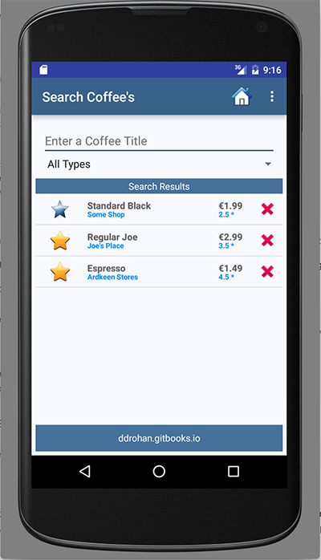

Reusing Fragments - Searching Coffees
We now have a Fragment that has filtering capabilities so we use these to search our list of coffees and refine the list based on either the coffees name, it's type, or both. To achieve this, we'll subclass our existing CoffeeFragment and create new class called SearchFragment and assocaiate this Fragment with our Search.java Activity class.
SearchFragment.java
Have a quick look at the existing SearchFragment class:
public class SearchFragment extends CoffeeFragment
{
@Override
public void onAttach(Activity activity) {
super.onAttach(activity);
}
@Override
public void onCreate(Bundle savedInstanceState) {
super.onCreate(savedInstanceState);
}
@Override
public void onStart() {
super.onStart();
}
}There's not much in there, so the first thing we'll do is add some choices to the Spinner so the user can filter on a 'type'.
We'll use an Adapter to populate the Spinner data so have a go at completing the following:
First, create the Adapter
ArrayAdapter<CharSequence> spinnerAdapter = ArrayAdapter
.createFromResource(/*activity reference*/, /*the options to display*/,
android.R.layout.simple_spinner_item);
spinnerAdapter
.setDropDownViewResource(android.R.layout.simple_spinner_dropdown_item);Next, bind to the Spinner widget of the layout
Spinner spinner = /*Bind to the spinner widget R.id.searchCoffeeTypeSpinner*/;and finally, set the Spinners adapter to the adapter you've set up (spinnerAdapter).
If you run your app again, you would expect to see the Spinner showing data - but it does not. Can you work out what the issue is? (HINT: Have a look at the Search.java Activity class and the type of Fragment being loaded)
If you've spotted what needed to be changed, run the app one more time and you should now be seeing something like this when you click on the Spinner.
 and 
The last step is to add the listeners for the Spinner and EditText widgets to filter the list on the users selections.